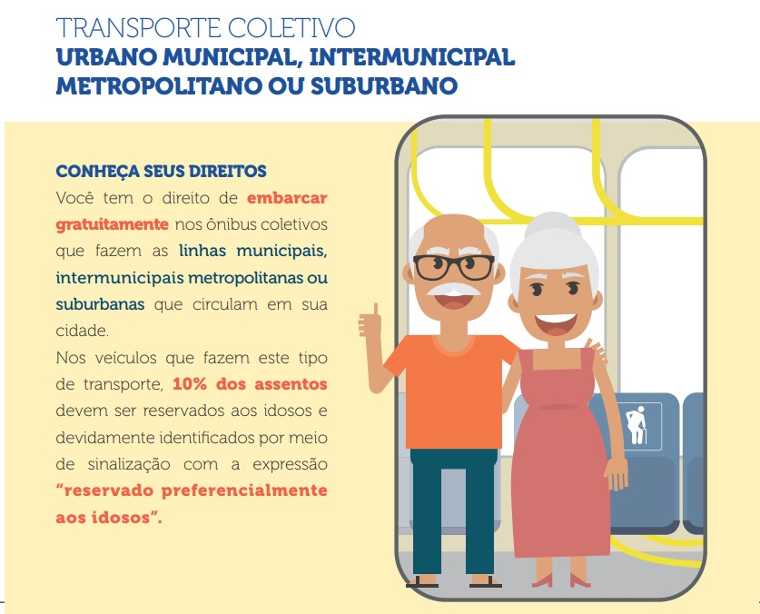

Gratuidade em transporte público
IDOSOS

COMO TER ACESSO A ESSE BENEFÍCIO?
CONHEÇA SEUS DIREITOS

VIAGENS
Viajar é algo positivo, não importa a idade. E a prática já é bastante usual entre os idosos.
Segundo dados da Associação Brasileira de Agências de Viagens (ABAV Nacional), os viajantes com mais de 65 anos representam cerca de 15% dos pacotes turísticos vendidos no Brasil para destinos nacionais e internacionais.
Com a demanda crescente, é importante que esses cidadãos estejam cientes dos seus direitos, para que possam usufruir dos direitos que lhe são garantidos.
auxílios
As empresas oferecem, na maioria dos casos, serviço especial para a terceira idade durante a viagem. Dependendo da companhia aérea, pode-se contar com ajuda para idosos no check-in, salas de espera especiais nos aeroportos de trânsito, ajuda no processo de escala, no embarque e durante a ocupação do lugar no avião.
Para idosos com dificuldades de locomoção ou que sofrem de doenças, há o fornecimento de uma cadeira de rodas, que possibilitará superar longas distâncias em aeroportos de transferência.

Bilhete Único Especial: Idoso
Pode ser utilizado no transporte público municipal (ônibus, micro-ônibus)
O benefício é concedido para homens e mulheres com idade igual ou superior a 60 (sessenta) anos que, comprovadamente, residam na Região Metropolitana de São Paulo ou em Campo Limpo Paulista, Várzea Paulista e Jundiaí.
O cadastro deverá ser realizado pessoalmente em um dos Postos de Atendimento ao Passageiro Especial.
Documentos necessários :
documento de identificação oficial com foto (RG, CNH, CIE) originais e cópias simples;
comprovante recente de endereço, com no máximo 6 meses, com CEP (conta de luz, água, conta de telefone, etc.) original e cópia simples.
A foto para o cartão será feita na hora, no próprio Posto de Atendimento.
O Bilhete Único Especial – Idoso será encaminhado pelo correio no prazo de 20 dias.
A foto será tirada no momento do cadastro.
Conheça os postos de atendimentos em São Paulo
Local
Horários
Aricanduva
Rua Atucuri, 699
das 8h às 16h
Butantã
Rua Dr. Ulpiano da Costa Manso, 201
das 8h às 16h
Campo Limpo
Rua Nossa Senhora do Bom Conselho, 59
das 8h às 16h
Capela do Socorro
Rua Cassiano dos Santos, 499
das 8h às 16h
Casa verde
Av. Ordem e Progresso, 1001
das 8h às 16h
Cidade Ademar
Av. Yervant Kissajikian, 415
das 8h às 16h
Ermelino Matarazzo
Av. São Miguel, 5550
das 8h as 16h
Freguesia do Ó
Rua João Marcelino Branco, 95
das 8h às 16h
Guianases
Rua Hipolito de Camargo, 479
das 8h às 16h
Ipiranga
Rua Lino Coutinho, 444
das 8h às 16h
Itaim Paulista
Av. Marechal Tito, 3012
das 8h às 16h
Itaquera
Rua Augusto Carlos Bauman, 851
das 8h às 16h
Jabaquara
Av. Engenheiro Armando de Arruda Pereira, 2314
das 8h às 16h
Jaçanã
Rua Luiz Stamatis, 300
das 8h às 16h
Lapa
Rua Guaicurus, 1000
das 8h às 16h
Metrô - Estação Marechal Deodoro
Av. General Olímpio da Silveira, Loja 01
das 8h às 16h
Penha
Rua Candapui, 492
das 8h às 16h
Perus
Rua Ylídio Figueiredo, 349
das 8h às 16h
Santana/Tucuruvi
Av. Tucuruvi, 808
das 8h às 16h
São Mateus
Av. Ragueb Chofi, 1400
das 8h às 16h
São Miguel
Rua Ana Flora Pinheiro de Souza, 76
das 8h às 16h
Sapopemba
Av. Sapopemba, 9064
das 9h às 16h
Sé
Rua Boa Vista, 274
das 8h às 17h
Terminal Pirituba
Av. Raimundo Pereira de Magalhães, 4991
das 8h às 16h
Terminal Santo Amaro
Av. Padre José Maria, 400
das 8h às 16h
Vila Maria
Rua General Mendes, 111
das 8h às 16h
Vila Mariana
Rua José de Magalhães, 450
Não informado
Vila Prudente
Av. do Oratório, 172
das 8h às 16h
Viajar é algo positivo, não importa a idade. E a prática já é bastante usual entre os idosos.
Com a demanda crescente, é importante que esses cidadãos estejam cientes dos seus direitos, para que possam usufruir dos direitos que lhe são garantidos.
auxílios
As empresas oferecem, na maioria dos casos, serviço especial para a terceira idade durante a viagem. Dependendo da companhia aérea, pode-se contar com ajuda para idosos no check-in, salas de espera especiais nos aeroportos de trânsito, ajuda no processo de escala, no embarque e durante a ocupação do lugar no avião.
Para idosos com dificuldades de locomoção ou que sofrem de doenças, há o fornecimento de uma cadeira de rodas, que possibilitará superar longas distâncias em aeroportos de transferência.
Bilhete Único Especial: Idoso
Documentos necessários :
A foto para o cartão será feita na hora, no próprio Posto de Atendimento. O Bilhete Único Especial – Idoso será encaminhado pelo correio no prazo de 20 dias. A foto será tirada no momento do cadastro.
Conheça os postos de atendimentos em São Paulo
| Local | Horários |
|---|---|
| Aricanduva Rua Atucuri, 699 | das 8h às 16h |
| Butantã Rua Dr. Ulpiano da Costa Manso, 201 | das 8h às 16h |
| Campo Limpo Rua Nossa Senhora do Bom Conselho, 59 | das 8h às 16h |
| Capela do Socorro Rua Cassiano dos Santos, 499 | das 8h às 16h |
| Casa verde Av. Ordem e Progresso, 1001 | das 8h às 16h |
| Cidade Ademar Av. Yervant Kissajikian, 415 | das 8h às 16h |
| Ermelino Matarazzo Av. São Miguel, 5550 | das 8h as 16h |
| Freguesia do Ó Rua João Marcelino Branco, 95 | das 8h às 16h |
| Guianases Rua Hipolito de Camargo, 479 | das 8h às 16h |
| Ipiranga Rua Lino Coutinho, 444 | das 8h às 16h | Itaim Paulista Av. Marechal Tito, 3012 | das 8h às 16h |
| Itaquera Rua Augusto Carlos Bauman, 851 | das 8h às 16h |
| Jabaquara Av. Engenheiro Armando de Arruda Pereira, 2314 | das 8h às 16h |
| Jaçanã Rua Luiz Stamatis, 300 | das 8h às 16h |
| Lapa Rua Guaicurus, 1000 | das 8h às 16h |
| Metrô - Estação Marechal Deodoro Av. General Olímpio da Silveira, Loja 01 | das 8h às 16h |
| Penha Rua Candapui, 492 | das 8h às 16h |
| Perus Rua Ylídio Figueiredo, 349 | das 8h às 16h |
| Santana/Tucuruvi Av. Tucuruvi, 808 | das 8h às 16h |
| São Mateus Av. Ragueb Chofi, 1400 | das 8h às 16h |
| São Miguel Rua Ana Flora Pinheiro de Souza, 76 | das 8h às 16h |
| Sapopemba Av. Sapopemba, 9064 | das 9h às 16h |
| Sé Rua Boa Vista, 274 | das 8h às 17h |
| Terminal Pirituba Av. Raimundo Pereira de Magalhães, 4991 | das 8h às 16h |
| Terminal Santo Amaro Av. Padre José Maria, 400 | das 8h às 16h |
| Vila Maria Rua General Mendes, 111 | das 8h às 16h |
| Vila Mariana Rua José de Magalhães, 450 | Não informado |
| Vila Prudente Av. do Oratório, 172 | das 8h às 16h |